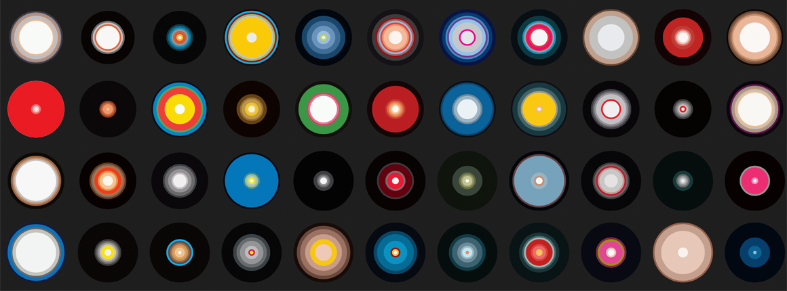

CS 73: Code, Data, and Art
Fall 2023
Harvard students: See also the official Canvas site
In addition to the subject’s intrinsic intellectual interest, studying computational art can introduce students to a series of themes and concepts in other areas of computer science. The course will provide a new viewpoint on—and practical experience with—areas ranging from web programming, storytelling with visualization, and societal and ethical issues around use of data. Students should be able to use lessons from this course to enhance their experience in courses such as CS 171 and CS 179.
Requirements The course will require some experience with coding, but no specific background in graphics, web technologies, art, or design. The course will weave in review of key computer science concepts. The sequence of lessons is organized so that early projects build confidence and fluency in coding for graphical expression. Later projects will allow deeper explorations of generative art, and the role of data in artistic expression.
Instructor and Course Assistants
Martin Wattenberg (Instructor)
Fernanda Viégas (Instructor)
Olivia Seow (TF)
Tina Gong (CA)
Read more
- Syllabus: Learning objective, topics covered, etc.
- Grading & Policies: General policies for the course.
- Resources: Reading material, technical documentation, art background, and places to find data.
- Official Harvard Canvas site.
- OpenProcessing course space
This course site was adapted, with permission, from the CS 171 site created by Hanspeter Pfister and Johanna Beyer.